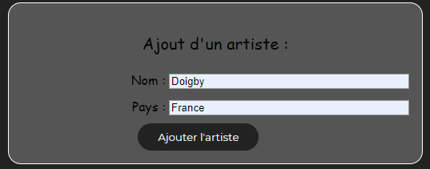
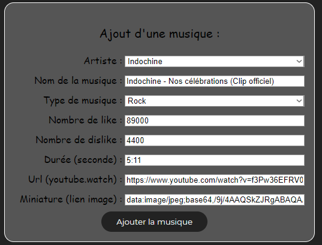
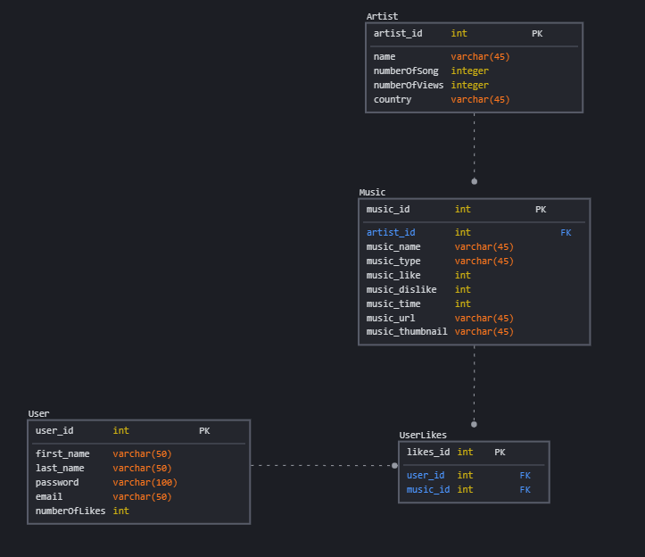

Le site "Grotify" est un site de visionnage de musique.
Il est composé de différentes pages ayant différents but.
Via Grotify, vous pouvez vous créer un compte, vous y connecter,
mais surtout, vous pouvez regarder des d'après vos goûts et les likers pour les revisionners par la suite.
NOTE : Dans quasiment toutes les pages, il y a le logo Grotify en haut a gauche permettant de retourner à l'accueil
Cette page est la page d'accueil du site, depuis celle ci, l'utilisateur peut se connecter, ou bien consulter son profil.
Mais égalements, il peut accèder a une proposition de 3 musiques par genre totalement aléatoire, et si il le veut,
il peut voir l'intégralité des musiques d'un genre en cliquant sur le nom du genre.
D'ailleurs, si l'utilisateur veut regarder une des musiques présentes sur la page d'accueil, il peut simplement cliquer dessus !
Ce n'est pas une page visitable, néanmoins, elle permet d'intégrer le même header dans toutes les pages du site.
C'est la page de connexion, elle permet en entrant son email et son mot de passe, de se connecter au site.
C'est d'ailleurs depuis cette page que vous pouvez accèder a la page d'inscription, si vous êtes nouveau sur Grotify...
Si vous n'avez pas encore de compte sur Grotify, la page d'inscription est faite pour ça !
Elle permet en rentrant quelques informations (nom, prénom, information banquaires, mot de passe et email) de vous créer un compte
enregistré dans la base de données !
Sur cette page, vous pouvez consulter les informations de votre profile, tel que vos likes, vos likes et vos likes
(on a pas vraiment eu le temps de rajouter d'autres fonctionnalitées, mais voir nos likes c'est déjà ça non ?)
Mais c'est également depuis cette page que vous pouvez vous déconnecter ! (en appuyant sur le gros bouton rouge)
Mais ce n'est pas fini, il y a une petite fonctionnalité cachée... Allez sur la page de connexion, et mettez :
email : admin@gmail.com
password : admin
Une fois de retour sur la page de profile, il y a quelque chose de nouveau non ?
Effectivement, depuis le compte admin, vous avez la possibilitée de rajouter des données dans la base de données du site...
Note : Les 2 textes sur la page de profil sont des textes cliquables !
Rien de passionnant, juste une page qui permet de se déconnecter, c'est l'arrivée du gros bouton rouge de la page profil...
Encore une fois, ce n'est pas une page consultable (mis à part si vous aimez voir des pages entièrement blanches) !
Néanmois, c'est un des fichiers les plus importants, car il contient énormément de fonctions pour le site,
tel que l'ajout de musique dans la base de données, ou pleins d'autres choses (je vous laisse aller regarder si vous
voulez connaître l'intégralité des fonctions dans le site) !
Cette page est très utile pour l'utilisateur, en effet, elle permet de voir l'intégralité des musiques liké par l'utilisateur !
Mais également de les révisionner si il le souhaite en cliquant sur la miniature de la vidéo...
Cette page contient toutes les musiques du type que l'utilisateur a choisi depuis la page d'accueil !
Très intéressant si
nous voulons écouter un style de musique, mais que nous voulons en découvrir de nouvelles n'est-ce pas ?
Tout comme depuis la page d'accueil et la page de like, l'utilisateur peut écouter des musiques en cliquant sur la miniatures !
La page de visionnage est la page où vous pouvez regarder les vidéos du site, quand vous cliquez sur une miniature
de musique depuis n'importe quelle page, c'est ici que vous êtes emmenés !
C'est également ici que vous pouvez liker vos musiques, pour les retrouvers sur votre profile,
ou bien les regarder par la suite !
Voici la page reservé aux administrateurs du site, mais ayant eu les codes secrets, vous pouvez y avoir accès également...
Comme vous pouvez le voir, cette page est divisé en 2 catégories :
1) Le formulaire d'ajout artiste :
- Nom (String)
- Pays (String)

2) Le formulaire d'ajout de musique :
- Nom de l'artiste (Selection depuis le menu déroulant)
- Nom de la musique (String)
- Type de musique (Selection depuis le menu déroulant)
- Nombre de like (INT)
- Nombre de dislike (INT)
- Durée (minute:seconde)
- Url (Attention a ce que le lien de la vidéo commence par youtube.watch)
- Miniature (Clique droit, copier l'adresse de l'image sur google)

Une fois le formulaire rempli si vous allez à l'accueil, puis dans la catégorie de musique choisi, vous devrez voir votre musique !
Axel : Je n'ai pas rencontré spécialement de problème mis à part le fait que quand je modifiais le fichier css,
et que j'actualisais la page, rien ne changeais, mais après quelques recherches, j'ai trouvé que c'était dû au fait
qu'il fallait vider le cache graphique de temps en temps, en faisant CTRL + F5.
Robin :
Backend (php):
La répartition des tâches a été compliqué, car le site nécessitant beaucoup de php, language que seul Axel dans le binôme
connaissait, tout le back-end a été fait par Axel.
Frontend (html+css) :
Dans cette partie là, Axel et Robin ont fait une quantité plus où moins égale de travail, et le fait d'avoir été
en binôme a fortement aidé pour la prise de décision dans cette partie là !
Base de données (SQLITE3):
Pour la base de données, la conception ainsi que les idées de contenu et de relations entre les tables, tout a été fait en cours,
dans les premières séances du projet, et ensemble, a cette étape, nous avons beaucoup réfléchis à l'élaboration de la base de données
mais également a l'aspect final du site !
Pour la création des tables, tout a encore une fois été fait a 2, en classe avant de commencer pleinement le projet !
Puis, pour le remplissage de la base de données, Robin a rempli la majorité des musiques et Axel en a mis quelques unes !
